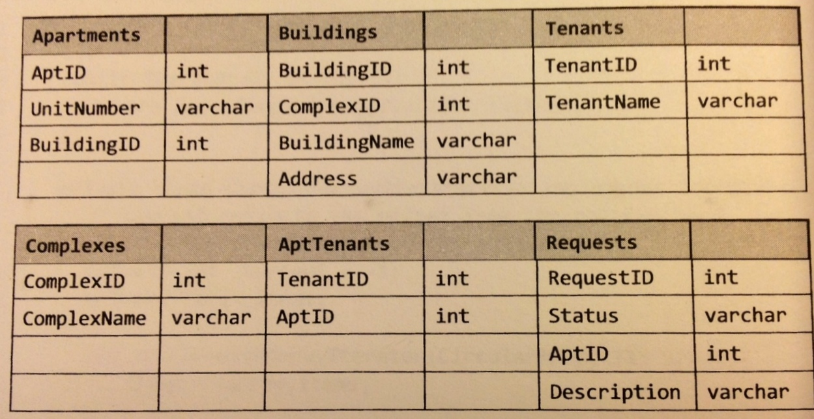

Possible interview questions
-
What are the different types of JOINs? Please explain how they differ and why certain types are better in certain situations.
-
What is denormalization? Explain the pros and cons.
-
Draw an entity-relationship diagram for a database with companies, people, and professionals (people who work for companies).
-
Imagine a simple database storing information for students' grades. Design what this database might look like and provide a SQL query to return a list of honor roll students (top 10%), sorted by their GPA.

-
Write a SQL query to get a list of tenants who are renting more than one apartment.
- Write a SQL query to get a list of all builings and the number of open requests (requests in which status equals 'Open').
- Building 11 is undergoing a major renovation. Implement a query to close all requests from apartments in this building.